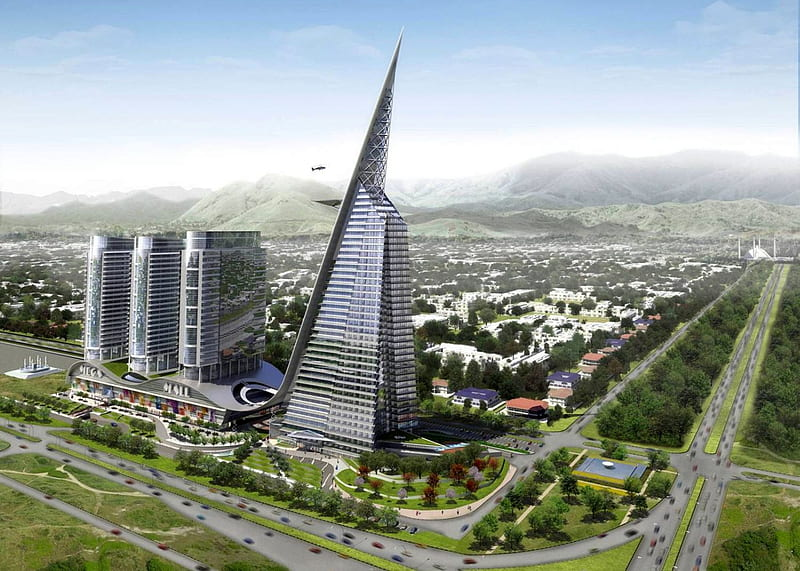
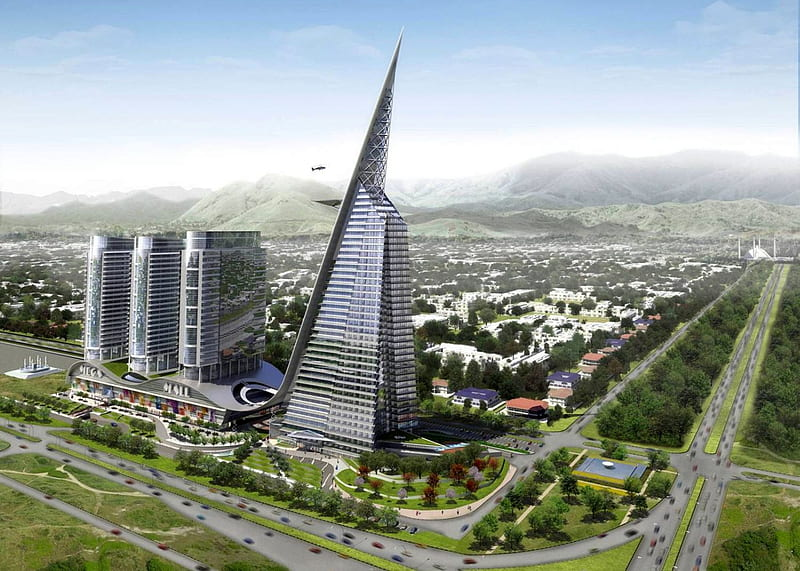
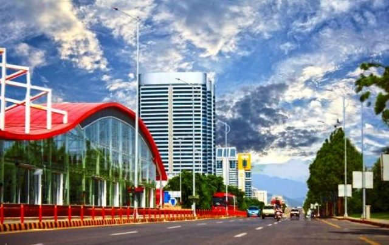
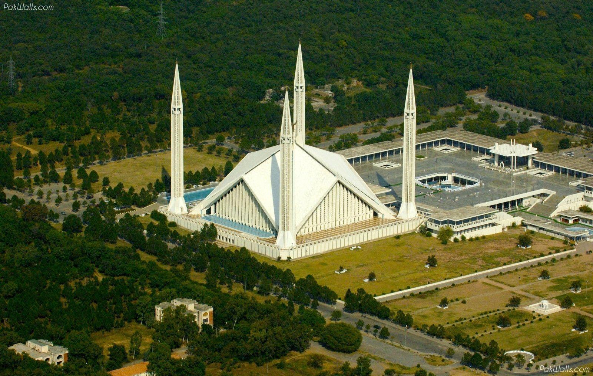
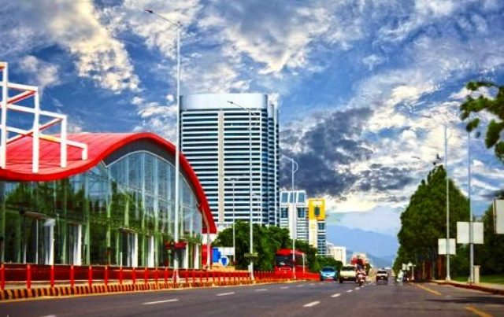
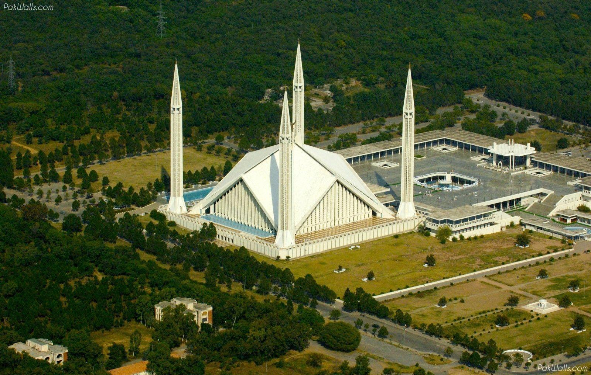

Islamabad, Pakistan's capital city, stands as a testament to the country's progress, natural beauty,
and cultural heritage. With its well-planned infrastructure, iconic landmarks, diplomatic presence,
and harmonious integration of nature, Islamabad offers a unique experience for residents and visitors alike.
As Pakistan continues to grow and develop, Islamabad remains a shining example of a modern capital city that
preserves the nation's cultural roots while embracing progress and
One of the distinctive features of Islamabad is its meticulous urban planning. Designed by Greek architect Constantinos Apostolou Doxiadis,
the city showcases a grid-based layout, well-connected road networks, and spacious green areas. The wide boulevards, landscaped parks,
and tree-lined avenues create a refreshing ambiance and contribute to Islamabad's reputation as a clean and green city.
Islamabad is home to several iconic landmarks that reflect both modern and traditional architectural styles. The Faisal Mosque,
with its grand white facade and striking design, is one of the largest mosques in the world and serves as a symbol of Pakistan's
Islamic heritage. The Pakistan Monument, shaped like a blooming flower, stands as a tribute to the country's national identity and history.
Additionally, the Centaurus Mall, Shakarparian Park, and Rawal Lake are among the popular attractions that showcase the city's recreational and entertainment offerings.
 


 



Government Institutions: As the capital city of Pakistan, Islamabad houses the major government institutions, including the Parliament House, the President's House, the Prime Minister's House, and various ministries and government offices. Islamabad is home to the Diplomatic Enclave, where most foreign embassies and consulates are located. It serves as a hub for diplomatic activities. Islamabad was carefully designed and planned by a Greek architect, Constantinos Apostolou Doxiadis, in the 1960s. It is known for its well-organized road networks, green spaces, and distinct sectors. Margalla Hills: The picturesque Margalla Hills surround Islamabad, offering stunning views and recreational opportunities. The Margalla Hills National Park is a popular spot for hiking, picnics, and nature enthusiasts. Faisal Mosque: Faisal Mosque is an iconic landmark in Islamabad and one of the largest mosques in the world. Its unique architecture blends modern and traditional Islamic styles, and it can accommodate tens of thousands of worshippers. Educational Institutions: Islamabad is home to several prestigious educational institutions, including Quaid-i-Azam University, Islamabad Medical and Dental College, and the National University of Sciences and Technology (NUST). Green City: Islamabad is known for its abundant greenery and parks, earning it the reputation of being one of the greenest cities in Pakistan. The city boasts numerous parks and gardens, such as Fatima Jinnah Park, Daman-e-Koh, and Shakarparian Park. Quality of Life: Islamabad is often regarded as one of the most livable cities in Pakistan due to its cleanliness, security, and relatively high standard of living. It offers a mix of modern amenities, recreational facilities, and a serene environment.